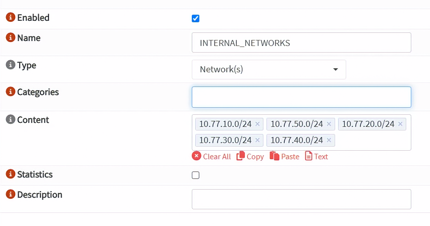
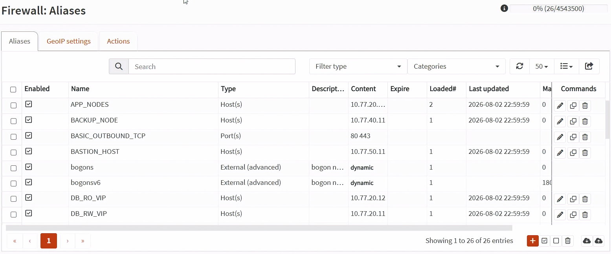
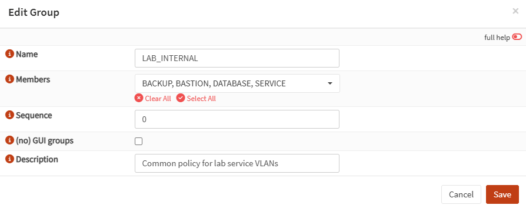
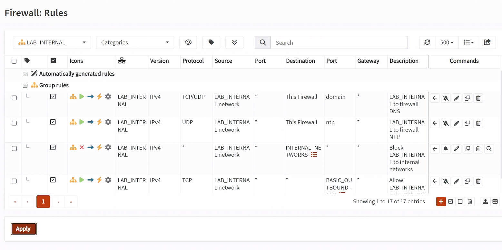
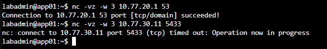
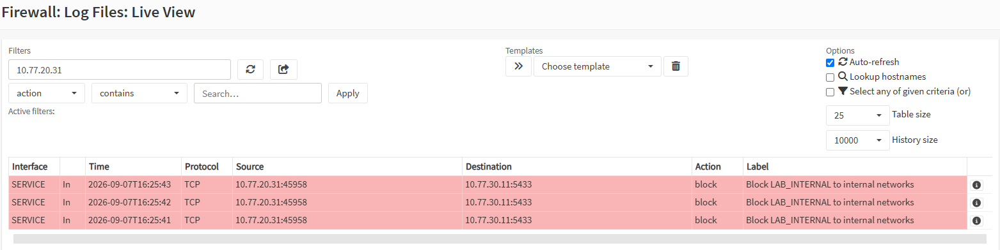

Day 14｜從預設拒絕到最小權限：OPNsense 防火牆的別名與規則順序
對應文章：Day 14｜從預設拒絕到最小權限：OPNsense 防火牆的別名與規則順序
Day 14 會實際建立 Alias 與 VLAN 的基礎規則。由於 proxy、PostgreSQL、jump01 等 VM 還沒有建立，服務專屬的跨區規則、WAN NAT 與連線測試只記錄規格，不在今天啟用。
今天也不在尚未完成規則前修改 PVE Default Gateway。Day 15 會先新增 PVE_NODES Alias 與 LAN 出口規則，再逐台將 pve01～pve03 切到 Management VLAN 10。
1. 建立 INTERNAL_NETWORKS
- 進入
Firewall→Aliases。 - 按右下角
Add。 Enabled保持勾選。Name填入INTERNAL_NETWORKS。- 先將
Type選成Network(s)，不要選Host(s)。 - 在
Content中分別新增下列五個項目：
10.77.10.0/24
10.77.20.0/24
10.77.30.0/24
10.77.40.0/24
10.77.50.0/24
- 每個 CIDR 都是一個獨立項目，不要輸入
10.77.10.0/24～10.77.50.0/24。 Description填入All internal lab networks。- 按
Save，回到 Alias 清單後按Apply。
如果出現下列錯誤，通常是 Type 還在 Host(s)，或把多個網段當成同一個項目輸入：
Entry "10.77.10.0/24" is not a valid hostname, IP address or range.
OPNsense 的 Network Alias 可使用 CIDR，10.77.10.0/24 本身是有效的網段寫法。

圖（一）建立 INTERNAL_NETWORKS Network Alias。
2. 建立主機 Alias
下列 VM 雖然還沒有建立，Alias 只是對已規劃 IP 的命名清單，因此可以先建立，不會自動建立 VM 或放行流量。
每一個 Alias 都使用下列步驟：
- 在
Firewall→Aliases按Add。 Type選Host(s)。- 填入
Name。 - 將每個 IP 分別加入
Content。 - 填入用途說明，按
Save。
依序建立：
PROXY_NODES：10.77.20.21、10.77.20.22。APP_NODES：10.77.20.31、10.77.20.32。PG_NODES：10.77.30.11、10.77.30.12、10.77.30.13。CA_NODE：10.77.30.10。BACKUP_NODE：10.77.40.11。BASTION_HOST：10.77.50.11。WEB_VIP：10.77.20.10。DB_RW_VIP：10.77.20.11。DB_RO_VIP：10.77.20.12。BASTION_TARGETS：10.77.20.21、10.77.20.22、10.77.30.11、10.77.30.12、10.77.30.13、10.77.40.11。
全部完成後按 Apply。BASTION_TARGETS 不要直接放入整個 10.77.0.0/16，否則 jump01 未來會可以嘗試 SSH 到過多主機。
CA_NODE 只先保留名稱，不加入 BASTION_TARGETS，也不在 Day 14 建立 Allow。Day 19 會在 ca01 使用 nftables Host Firewall 放行 PG_NODES → CA_NODE TCP 9000。因為這是同 VLAN 流量，OPNsense 看不到，必須由 ca01 自身的 Host Firewall 處理。

圖（二）確認 Host、Network 與 Port Alias 清單。
3. 建立 Port Alias
這一節需要實際操作。
- 到
Firewall→Aliases，按Add。 Type選Port(s)。- 建立
WEB_PORTS，Content分別加入80與443。 - 按
Save。 - 使用相同方法建立
PGSQL_PORT，加入5432。 - 建立
PATRONI_API，加入8008。 - 建立
ETCD_PORTS，分別加入2379與2380。 - 建立
BASIC_OUTBOUND_TCP，分別加入80與443。 - 最後按
Apply。
4. 使用 Interface Group 簡化共同規則
不需要對 SERVICE、DATABASE、BACKUP、BASTION 重複建立四套規則。先把四個 VLAN 放入同一個 Interface Group，再建立一套共同規則即可。
不要直接在單一規則中同時勾選四個 Interface。在 OPNsense 新版 Rules 中，多個 Interface 會使這條規則成為 Floating Rule，處理順序比 Group Rule 與單一 Interface Rule 更早，未來加入例外規則時較難判讀。
4.1 建立 LAB_INTERNAL Interface Group
- 進入
Firewall→Groups。 - 按右下角橘色
+。 Name填入LAB_INTERNAL。Members同時選擇SERVICE、DATABASE、BACKUP與BASTION。No GUI groups不要勾選，這樣才能在 Rules 畫面看到這個 Group。Description填入Common policy for lab service VLANs。- 按
Save，再按Apply。
LAN 不加入這個 Group，避免影響現在從 10.77.10.0/24 進入 OPNsense Web GUI 的管理路徑。

圖（三）建立包含 SERVICE、DATABASE、BACKUP 與 BASTION 的 LAB_INTERNAL Group。
4.2 建立共用 DNS 規則
- 進入
Firewall→Rules。 - 按右下角橘色
+。 Interface只選 GroupLAB_INTERNAL，不要再勾選四個成員 Interface。Action選Pass，Quick保持勾選，Direction選in。Version選IPv4，Protocol選TCP/UDP。Source選LAB_INTERNAL network，Source Port 保持any。Destination選This Firewall。Destination Port填入53或選DNS。Description填入LAB_INTERNAL to firewall DNS。- 按
Save。
LAB_INTERNAL network 代表四個成員 Interface 的所有網段。This Firewall 則代表 OPNsense 本身的介面位址；這條規則仍只開放 TCP／UDP 53，不會開放其他服務。
4.3 建立共用 NTP 規則
- 回到
Firewall→Rules，再按右下角橘色+。 Interface選LAB_INTERNAL，Action選Pass。Version選IPv4，Protocol選UDP。Source選LAB_INTERNAL network。Destination選This Firewall。Destination Port填入123或選NTP。Description填入LAB_INTERNAL to firewall NTP。- 按
Save。
這條規則只允許封包到達 OPNsense。若 OPNsense NTP 服務沒有監聽這些 Interface，後續仍要調整 NTP 服務設定。
4.4 建立共用內網 Block 規則
- 回到
Firewall→Rules，再按右下角橘色+。 Interface選LAB_INTERNAL，Action選Block。Version選IPv4，Protocol選any。Source選LAB_INTERNAL network。Destination選 AliasINTERNAL_NETWORKS。- 勾選
Log packets that are handled by this rule。 Description填入Block LAB_INTERNAL to internal networks。- 按
Save。
4.5 建立共用套件更新規則
- 回到
Firewall→Rules，再按右下角橘色+。 Interface選LAB_INTERNAL，Action選Pass。Version選IPv4，Protocol選TCP。Source選LAB_INTERNAL network。Destination選any。Destination Port選 AliasBASIC_OUTBOUND_TCP。Description填入Allow LAB_INTERNAL HTTP HTTPS outbound。- 按
Save。
Destination 不要選 WAN network。WAN network 只是 fw01 WAN 直接連接的上游網段，不代表整個 Internet。
4.6 確認 Group Rule 順序
- 回到
Firewall→Rules。 - 在左上角
All rules下拉選單選擇LAB_INTERNAL。 - 將規則排成：
LAB_INTERNAL to firewall DNS
LAB_INTERNAL to firewall NTP
未來的明確跨區 Allow
Block LAB_INTERNAL to internal networks
Allow LAB_INTERNAL HTTP HTTPS outbound
- 如果規則順序不對，勾選要移動的規則，再按目標規則右側的「Move selected rules before this rule」箭頭。
- 按畫面左下角
Apply。
內網 Block 規則必須放在 Internet 更新 Allow 之前，否則目的為內網主機的 TCP 80／443 也可能被寬鬆規則先命中。

圖（四）確認 LAB_INTERNAL 共用規則的排列順序。
5. 服務專屬規則今天不啟用
下列是後續部署日要建立的規則，今天只記錄，不要進入 GUI 新增：
PROXY_NODES → PG_NODES TCP 5432
PROXY_NODES → PG_NODES TCP 8008
PG_NODES → PG_NODES TCP 5432
PG_NODES → PG_NODES TCP 2379-2380
PG_NODES → BACKUP_NODE TCP 22
BASTION_HOST → BASTION_TARGETS TCP 22
實際新增時，Interface 也選 LAB_INTERNAL，再使用 Source 與 Destination Alias 限定真正的來源與目標。必須將這些規則放在 Block LAB_INTERNAL to internal networks 上方。等對應 VM 與服務存在後才啟用，才能判斷是規則、路由還是服務本身的問題。
6. 今天可以做的確認
因為服務 VM 尚未建立，今天不執行 nc、curl 或跨 VLAN 連線測試。也不必進入 Firewall → Diagnostics → Aliases；那是排錯時查看 Alias 實際載入內容的工具，不是必要設定步驟。
今天只做下列確認：
- 進入
Firewall→Aliases，在主清單搜尋INTERNAL_NETWORKS。 - 如果找到，按右側鉛筆開啟，確認 Type 是
Network(s)，Content 有10.77.10.0/24、10.77.20.0/24、10.77.30.0/24、10.77.40.0/24、10.77.50.0/24。內容正確就取消離開，不用重建。 - 如果主清單完全找不到
INTERNAL_NETWORKS，代表第 1 節沒有成功儲存，回到第 1 節建立後按Apply。 - 進入
Firewall→Groups，確認LAB_INTERNAL包含SERVICE、DATABASE、BACKUP與BASTION。 - 進入
Firewall→Rules，用左上角All rules下拉選單篩選LAB_INTERNAL。 - 確認 DNS、NTP 在內網 Block 之上，上網 Allow 在內網 Block 之下。
- OPNsense 不會顯示一個叫做
Group Rule的狀態欄位。按其中一條規則右側的鉛筆進入編輯畫面，確認Interface只有LAB_INTERNAL一項，沒有同時勾選 SERVICE、DATABASE、BACKUP、BASTION。 - 確認沒有新增跨區
any to any。
以下兩張為 app01 與 pg01 建立後補做的驗證畫面，不屬於 Day 14 當日必要操作。

圖（五）從測試主機確認允許與拒絕結果。

圖（六）在 OPNsense Live View 確認規則命中結果。
7. 儲存 Day 14 設定備份
- 進入
System→Configuration→Backups。 - 下載完成 Alias 與基礎規則後的
config.xml。 - 檔名記錄日期與 OPNsense 版本。